Nous suivre et nous contacter
Toutes les façons de rester en contact avec le club.
VTT Déscente à Conquereuil, Loire-Atlantique. Si tu cherches l'adrénaline, prends ton casque et viens, on n'attend que toi.
Nous rejoindreQui sommes-nous, ce qu'on fait, et pourquoi tu vas adorer.
Toi aussi tu es à la recherche d'adrénaline et de sensations fortes ? Tu es au bon endroit. Cet espace est un véritable havre de paix qui va te permettre de te ressourcer tout en progressant. Un véritable terrain de jeu pour les riders, accessible à tous, quels que soient ton âge ou ton niveau.
Notre club rassemble des riders passionnés et bienveillants, que tu sois un débutant qui découvre le VTT ou un rider confirmé pour qui le vélo n'a presque plus de secrets. Les pistes sont aménagées avec soin et proposent plusieurs niveaux de difficulté, du petit pump track aux énormes bosses.
Seul, entre amis, ou en famille, le Massic Trail a quelque chose à offrir à chacun. Alors n'attends plus, prends ton casque et rejoins-nous à Conquereuil au Massic Trail, on n'attend que toi.
Trois niveaux de pistes, pour que chacun trouve son rythme et progresse à son tempo.
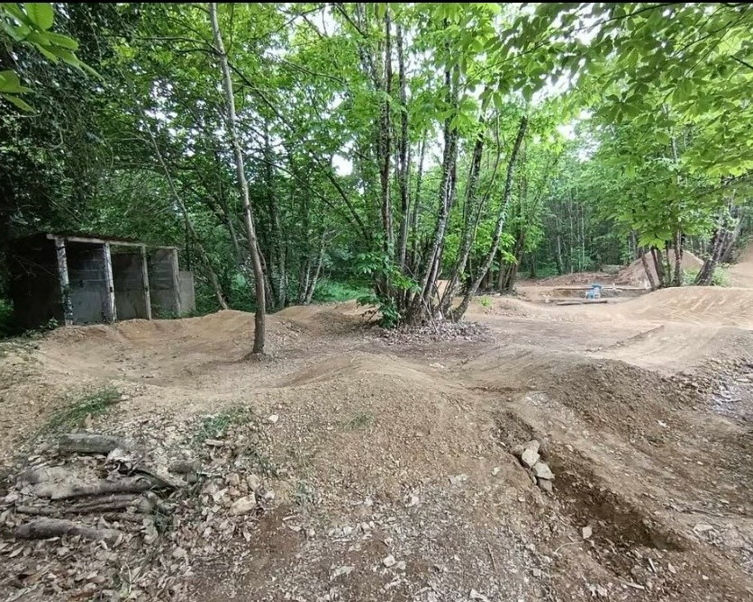
Cet espace est accessible a tous les ages et pour tout type de niveau, il est parfait pour s'entrainé ou fair debuter son plus jeune.
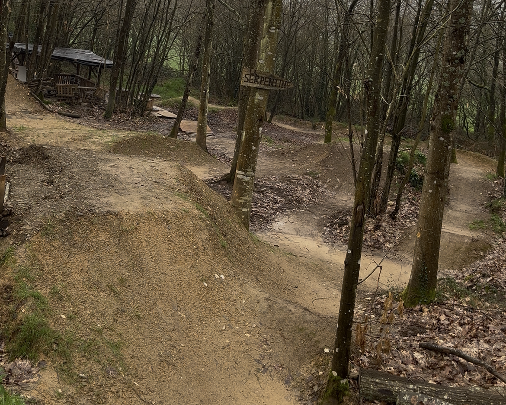
Cette piste est parfaite pour envoyer ces premier saut et ce metre en confiance pour le reste du terrain, elle est accessible a tout ages.
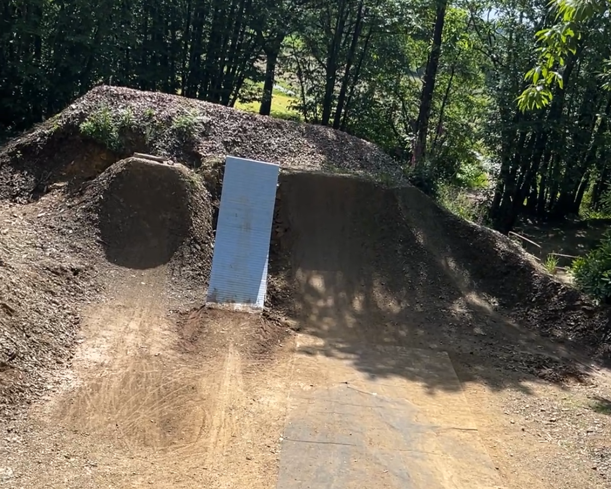
Pour cette piste il va falloir avoir déjà des bases solides en VTT et ne pas avoire le vertige
Les passionnés qui font vivre le Massic Trail au quotidien.
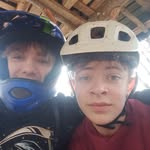
Rider
Rôle ou niveau
Rôle ou niveau
Rôle ou niveau
Riders, sauts, ambiance. Bienvenue dans notre quotidien.
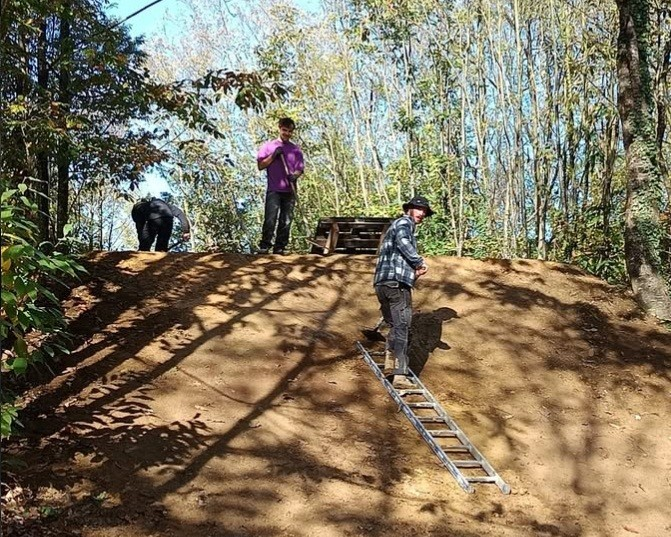
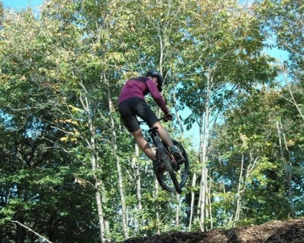
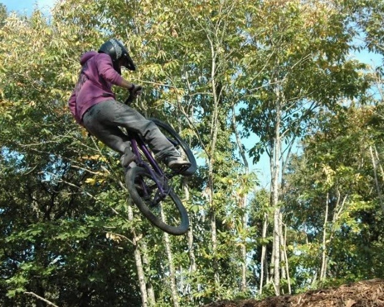
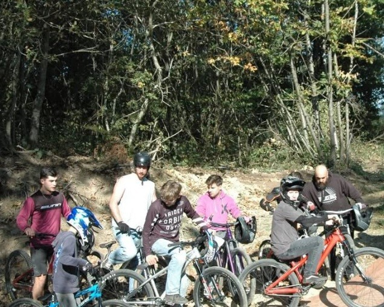
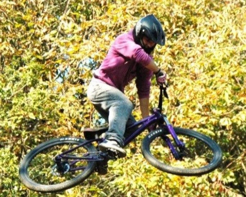
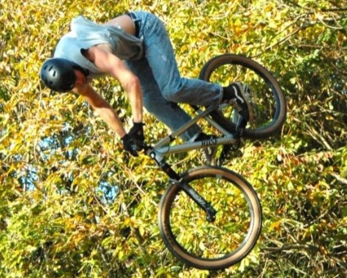
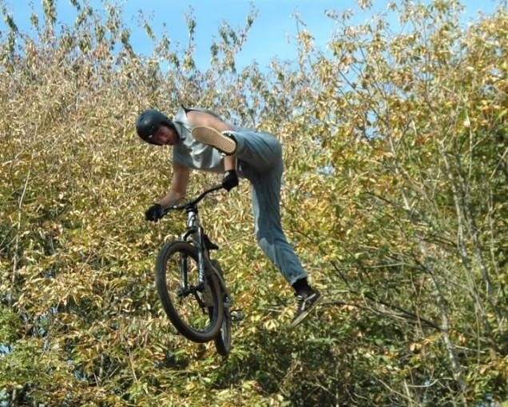
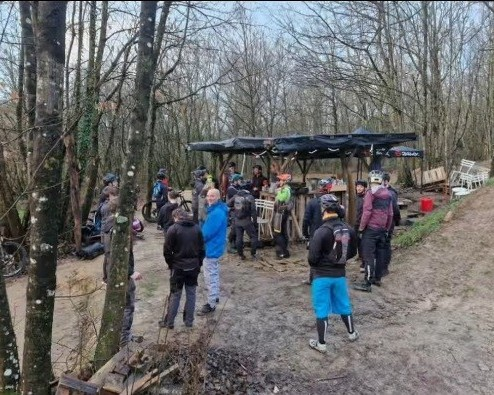
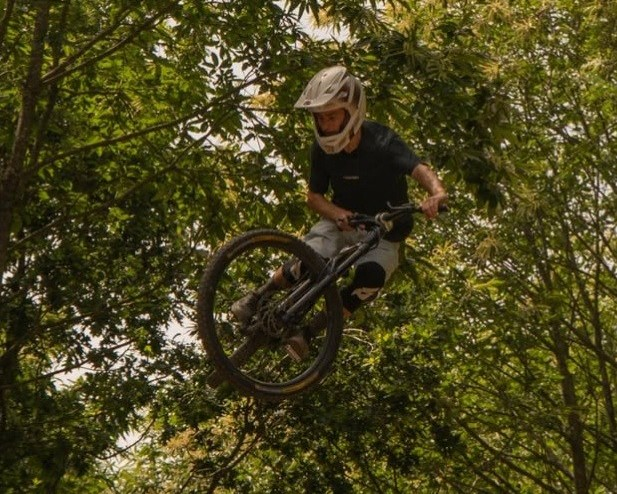
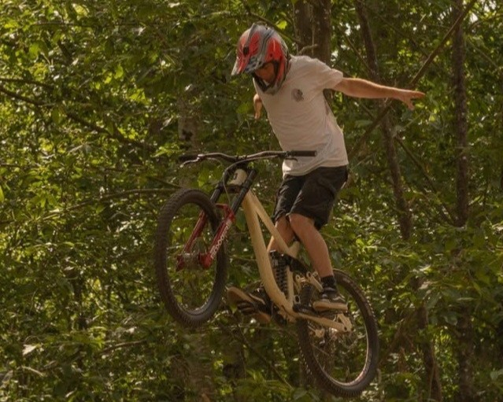
Toutes les façons de rester en contact avec le club.
Si tu n'as pas peur de prendre goût à l'adrénaline et de vouloir y rester, viens nous rencontrer. Le casque, on s'occupe de te montrer où le mettre.
Nous contacter